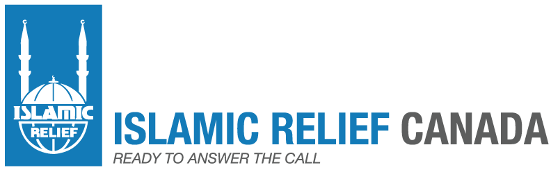
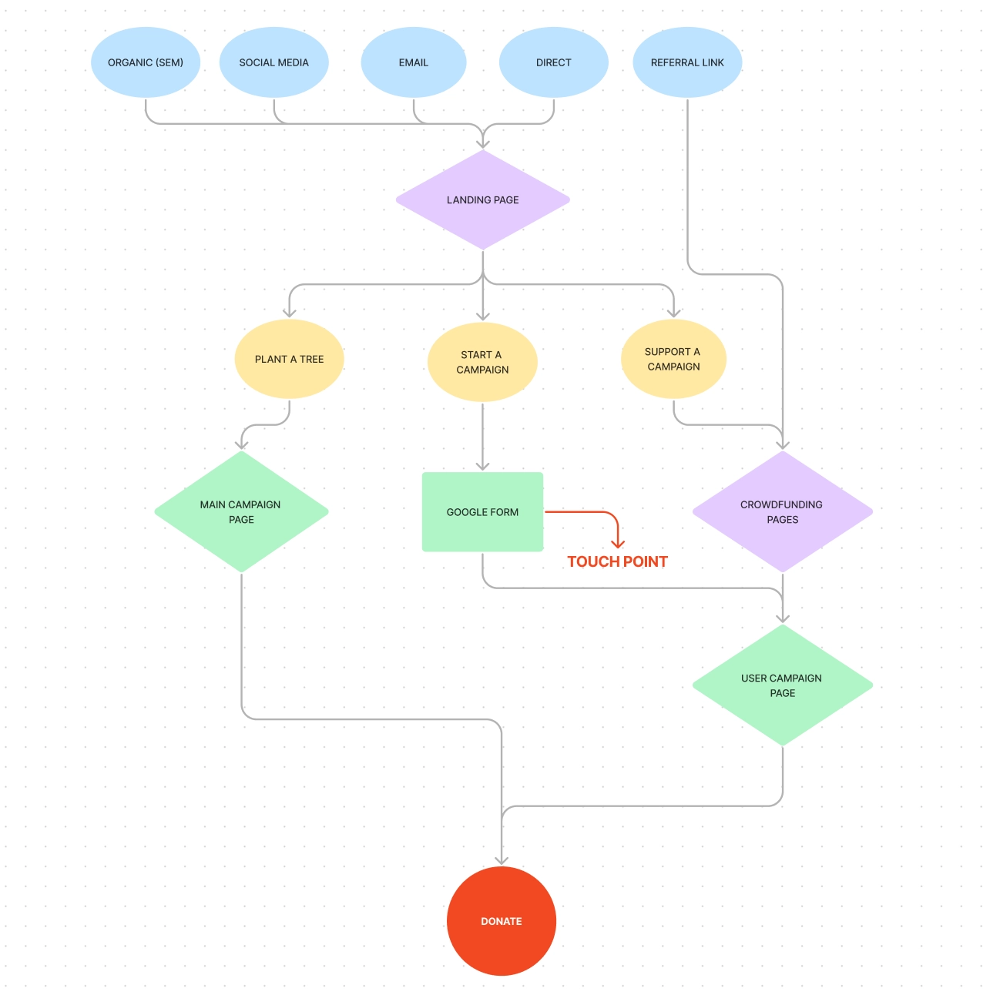
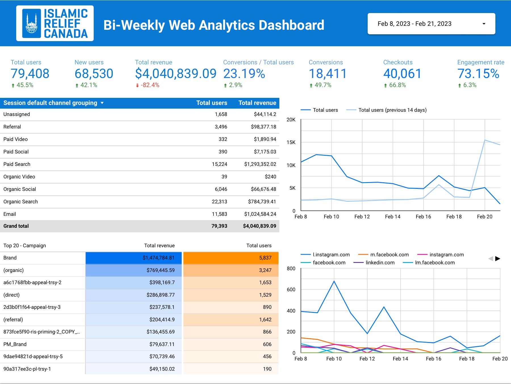

Giving Tuesday — Digital Fundraising Campaign
A data-informed digital fundraising campaign combining website development, donor journey design, multichannel marketing, performance tracking and campaign analysis.

Project overview
For Giving Tuesday 2022, Islamic Relief Canada launched a digital crowdfunding campaign supporting the planting of 10,000 trees in Palestine.
The campaign required a coordinated digital experience that connected social media promotions, email marketing, landing pages, community participation and online donations.
My contributions spanned campaign planning, donor journeys, website development, content coordination, digital tracking and performance analysis. An important part of this work was establishing ways to measure audience acquisition and campaign results across digital channels.
Campaign objectives
- Create clear digital pathways that encouraged audiences to engage with the campaign and complete donations.
- Coordinate a consistent campaign experience across webpages, email and social media.
- Implement tracking to measure promotional activity, website acquisition and campaign performance.
- Analyze results and compare campaign outcomes against the previous year.
01 / Donor journeys & campaign planning
I mapped the different pathways audiences could follow to participate in the campaign, from encountering promotional content to visiting a landing page and completing the intended action.
These user flows helped identify the digital touchpoints and deliverables needed to support the campaign, including advertisements, web content, registration forms and email journeys.
- Mapped user journeys across campaign channels and identified their intended conversion goals.
- Coordinated deliverables for different campaign flows, including creatives, ad sets, web copy, forms and email communications.
- Planned landing page requirements and coordinated the front-end and back-end development process.

02 / Website design & development
I worked on the campaign's digital landing experience, coordinating webpage content, creative assets and technical functionality.
Landing page design incorporated keyword considerations and heatmap insights to support usability and campaign engagement.
- Coordinated campaign copy and adapted creative assets for the website interface.
- Designed campaign landing page elements with consideration for search visibility and user behaviour.
- Created a Google Form for lead generation and developed automation supporting the creation of community campaign pages.
- Implemented UTM parameters for promotional links to support campaign tracking.
03 / Digital communications & social media
The campaign required coordinated messaging across different platforms while maintaining consistent branding, calls to action and audience journeys.
- Coordinated social media launch content with the publication of campaign webpages.
- Worked with copywriting and design teams to communicate creative requirements, messaging and publishing needs.
- Developed platform-specific social media strategies informed by audience differences.
- Incorporated keyword optimization into digital communications and streamlined campaign messaging.
- Supported campaign measurement through tracked promotional links and performance monitoring.
04 / Data analysis & visualization
Alongside the development and execution of the campaign, I was responsible for tracking digital performance, analyzing campaign data, and communicating results through reporting and data visualization.
Campaign tracking & data collection
I implemented UTM tracking across promotional links to identify acquisition sources and monitor the performance of campaign channels.
This supported consistent campaign measurement across the digital touchpoints developed during the planning and implementation stages.
Performance monitoring & analysis
I monitored website acquisition and campaign performance throughout the fundraising period, providing regular updates on campaign activity.
The analysis helped connect marketing activities with measurable outcomes and supported an understanding of audience engagement across digital channels.
Looker Studio dashboard development
I developed a dashboard in Looker Studio to visualize campaign performance and present analytical findings in an accessible format.
The dashboard formed part of my reporting workflow, translating campaign data into visual information that could support performance evaluation and communication.

Post-campaign reporting
After the campaign, I analyzed the final fundraising results and prepared a report comparing performance with the previous year.
The analysis documented changes in total donations and donor participation, providing a quantitative assessment of the campaign's year-over-year performance.
05 / Campaign results
The campaign generated measurable year-over-year improvements in fundraising and donor participation. The following results were documented in my original campaign portfolio.
10% increase from the previous year
25% increase from the previous year
The results demonstrate the campaign's fundraising reach and audience participation. My contribution included supporting the digital experience, tracking campaign activity and preparing the comparative analysis used to report these outcomes.